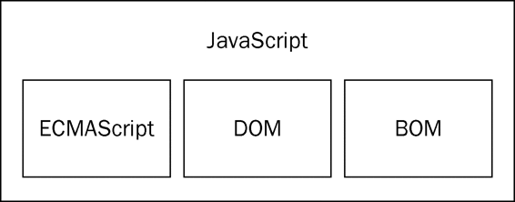
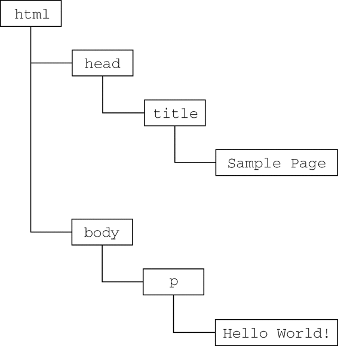

请读者注意，DOM并不只是针对JavaScript的，很多别的语言也都实现了DOM。不过，在Web浏览器中，基于ECMAScript实现的DOM的确已经成为JavaScript这门语言的一个重要组成部分。
请读者注意，DOM并不只是针对JavaScript的，很多别的语言也都实现了DOM。不过，在Web浏览器中，基于ECMAScript实现的DOM的确已经成为JavaScript这门语言的一个重要组成部分。
虽然JavaScript和ECMAScript通常都被人们用来表达相同的含义，但JavaScript的含义却比ECMA-262中规定的要多得多。没错，一个完整的JavaScript实现应该由下列三个不同的部分组成（见图1-1）。

图 1-1
核心（ECMAScript）
文档对象模型（DOM）
浏览器对象模型（BOM）
由ECMA-262定义的ECMAScript与Web浏览器没有依赖关系。实际上，这门语言本身并不包含输入和输出定义。ECMA-262定义的只是这门语言的基础，而在此基础之上可以构建更完善的脚本语言。我们常见的Web浏览器只是ECMAScript实现可能的宿主环境之一。宿主环境不仅提供基本的ECMAScript实现，同时也会提供该语言的扩展，以便语言与环境之间对接交互。而这些扩展——如DOM，则利用ECMAScript的核心类型和语法提供更多更具体的功能，以便实现针对环境的操作。前面介绍过的Node以及众所周知的Adobe Flash也都是宿主环境。
既然ECMA-262标准没有参照Web浏览器，那它都规定了些什么内容呢？大致说来，它规定了这门语言的下列组成部分：
语法
类型
语句
关键字
保留字
操作符
对象
ECMAScript就是对实现该标准规定的各个方面内容的语言的描述。JavaScript实现了ECMAScript，Adobe ActionScript同样也实现了ECMAScript。
1. ECMAScript的版本
ECMAScript的不同版本又称为版次，以第x版表示（意即描述特定实现的ECMA-262规范的第x个版本）。ECMA-262的最近一版是第5版，发布于2009年。而ECMA-262的第1版本质上与Netscape的JavaScript 1.1相同——只不过删除了所有针对浏览器的代码并作了一些较小的改动：ECMA-262要求支持Unicode标准（从而支持多语言开发），而且对象也变成了平台无关的（Netscape JavaScript 1.1的对象在不同平台中的实现不一样，例如Date对象）。这也是JavaScript 1.1和1.2与ECMA-262第1版不一致的主要原因。
ECMA-262第2版主要是编辑加工的结果。这一版中内容的更新是为了与ISO/IEC-16262保持严格一致，没有作任何新增、修改或删节处理。因此，一般不使用第2版来衡量ECMAScript实现的兼容性。
ECMA-262第3版才是对该标准第一次真正的修改。修改的内容涉及字符串处理、错误定义和数值输出。这一版还新增了对正则表达式、新控制语句、try-catch异常处理的支持，并围绕标准的国际化做出了一些小的修改。从各方面综合来看，第3版标志着ECMAScript成为了一门真正的编程语言。
ECMA-262第4版对这门语言进行了一次全面的检核修订。由于JavaScript在Web上日益流行，开发人员纷纷建议修订ECMAScript，以使其能够满足不断增长的Web开发需求。作为回应，ECMA TC39重新召集相关人员共同谋划这门语言的未来。结果，出台后的标准几乎在第3版基础上完全定义了一门新语言。第4版不仅包含了强类型变量、新语句和新数据结构、真正的类和经典继承，还定义了与数据交互的新方式。
与此同时，TC39下属的一个小组也提出了一个名为ECMAScript 3.1的替代性建议，该建议只对这门语言进行了较少的改进。这个小组认为第4版给这门语言带来的跨越太大了。因此，该小组建议对这门语言进行小幅修订，能够在现有JavaScript引擎基础上实现。最终，ES3.1附属委员会获得的支持超过了TC39，ECMAS-262第4版在正式发布前被放弃。
ECMAScript 3.1成为ECMA-262第5版，并于2009年12月3日正式发布。第5版力求澄清第3版中已知的歧义并增添了新的功能。新功能包括原生JSON对象（用于解析和序列化JSON数据）、继承的方法和高级属性定义，另外还包含一种严格模式，对ECMAScript引擎解释和执行代码进行了补充说明。
2. 什么是ECMAScript兼容
ECMA-262给出了ECMAScript兼容的定义。要想成为ECMAScript的实现，则该实现必须做到：
支持ECMA-262描述的所有“类型、值、对象、属性、函数以及程序句法和语义”（ECMA-262第1页）；
支持Unicode字符标准。
此外，兼容的实现还可以进行下列扩展。
添加ECMA-262没有描述的“更多类型、值、对象、属性和函数”。ECMA-262所说的这些新增特性，主要是指该标准中没有规定的新对象和对象的新属性。
支持ECMA-262没有定义的“程序和正则表达式语法”。（也就是说，可以修改和扩展内置的正则表达式语法。）
上述要求为兼容实现的开发人员基于ECMAScript开发一门新语言提供了广阔的空间和极大的灵活性，这也从另一个侧面说明了ECMAScript受开发人员欢迎的原因。
3. Web浏览器对ECMAScript的支持
1996年，Netscape Navigator 3捆绑发布了JavaScript 1.1。而相同的JavaScript 1.1设计规范随后作为对新标准（ECMA-262）的建议被提交给Ecma。伴随着JavaScript的迅速走红，Netscape豪情满怀地着手开发JavaScript 1.2。然而，问题是Ecma当时还没有接受Netscape的建议。
Netscape Navigator 3发布后不久，微软也推出了Internet Explorer 3。微软在IE的这一版中捆绑了JScript 1.0，很多人都认为JScript 1.0与JavaScript 1.1应该是一样的。但是，由于没有文档依据，加之不适当的特性模仿，JScript 1.0还是很难与JavaScript 1.1相提并论。
1997年，内置JavaScript 1.2的Netscape Navigator 4发布；而到这一年年底，ECMA-262第1版也被接受并实现了标准化。结果，虽然ECMAScript被认为是基于JavaScript 1.1制定的，但JavaScript 1.2与ECMAScript的第1版并不兼容。
JScript的升级版是Internet Explorer 4中内置的JScript 3.0（随同微软IIS 3.0发布的JScript 2.0从来也没有移植到浏览器中）。微软通过媒体大肆宣传JScript 3.0是世界上第一个ECMA兼容的脚本语言，但当时的ECMA-262尚未定稿。于是，JScript 3.0与JavaScript 1.2都遭遇了相同的尴尬局面——谁都没有按照最终的ECMAScript标准来实现。
Netscape决定更新其JavaScript实现，即在Netscape Navigator 4.06中发布JavaScript 1.3，从而做到了与ECMA-262的第一个版本完全兼容。在JavaScript 1.3中，Netscape增加了对Unicode标准的支持，并在保留JavaScript 1.2新增特性的同时实现了所有对象的平台中立化。
在Netscape以Mozilla项目的名义开放其源代码时，预期JavaScript 1.4将随同Netscape Navigator 5一道发布。然而，一个激进的决定，彻底重新设计Netscape代码，打乱了原有计划。后来，JavaScript 1.4只发布了针对Netscape Enterprise Server的服务器版，而没有内置于Web浏览器中。
到了2008年，五大主流Web浏览器（IE、Firefox、Safari、Chrome和Opera）全部做到了与ECMA-262兼容。IE8是第一个着手实现ECMA-262第5版的浏览器，并在IE9中提供了完整的支持。Firefox 4也紧随其后做到兼容。下表列出了ECMAScript受主流Web浏览器支持的情况。
| 浏 览 器 | ECMAScript兼容性 | 浏 览 器 | ECMAScript兼容性 |
|---|---|---|---|
| Netscape Navigator 2 | — | Opera 6～7.1 | 第2版 |
| Netscape Navigator 3 | — | Opera 7.2+ | 第3版 |
| Netscape Navigator 4～4.05 | — | Safari 1～2.0.x | 第3版* |
| Netscape Navigator 4.06～4.79 | 第1版 | Safari 3.x | 第3版 |
| Netscape 6+（Mozilla 0.6.0+） | 第3版 | Safari 4.x～5.x | 第5版* |
| IE3 | — | Chrome 1+ | 第3版 |
| IE4 | — | Firefox 1～2 | 第3版 |
| IE5 | 第1版 | Firefox 3.0.x | 第3版 |
| IE5.5～IE7 | 第3版 | Firefox 3.5～3.6 | 第5版* |
| IE8 | 第5版* | Firefox 4.0 + | 第5版 |
| IE9+ | 第5版 |
* 不完全兼容的实现
文档对象模型（DOM，Document Object Model）是针对XML但经过扩展用于HTML的应用程序编程接口（API，Application Programming Interface）。DOM把整个页面映射为一个多层节点结构。HTML或XML页面中的每个组成部分都是某种类型的节点，这些节点又包含着不同类型的数据。看下面这个HTML页面：
<html>
<head>
<title>Sample Page</title>
</head>
<body>
<p>Hello World!</p>
</body>
</html>
在DOM中，这个页面可以通过见图1-2所示的分层节点图表示。
通过DOM创建的这个表示文档的树形图，开发人员获得了控制页面内容和结构的主动权。借助DOM提供的API，开发人员可以轻松自如地删除、添加、替换或修改任何节点。
1. 为什么要使用DOM
在Internet Explorer 4和Netscape Navigator 4分别支持的不同形式的DHTML（Dynamic HTML）基础上，开发人员首次无需重新加载网页，就可以修改其外观和内容了。然而，DHTML在给Web技术发展带来巨大进步的同时，也带来了巨大的问题。由于Netscape和微软在开发DHTML方面各持己见，过去那个只编写一个HTML页面就能够在任何浏览器中运行的时代结束了。
对开发人员而言，如果想继续保持Web跨平台的天性，就必须额外多做一些工作。而人们真正担心的是，如果不对Netscapet和微软加以控制，Web开发领域就会出现技术上两强割据，浏览器互不兼容的局面。此时，负责制定Web通信标准的W3C（World Wide Web Consortium，万维网联盟）开始着手规划DOM。

图 1-2
2. DOM级别
DOM1级（DOM Level 1）于1998年10月成为W3C的推荐标准。DOM1级由两个模块组成：DOM核心（DOM Core）和DOM HTML。其中，DOM核心规定的是如何映射基于XML的文档结构，以便简化对文档中任意部分的访问和操作。DOM HTML模块则在DOM核心的基础上加以扩展，添加了针对HTML的对象和方法。
如果说DOM1级的目标主要是映射文档的结构，那么DOM2级的目标就要宽泛多了。DOM2级在原来DOM的基础上又扩充了（DHTML一直都支持的）鼠标和用户界面事件、范围、遍历（迭代DOM文档的方法）等细分模块，而且通过对象接口增加了对CSS（Cascading Style Sheets，层叠样式表）的支持。DOM1级中的DOM核心模块也经过扩展开始支持XML命名空间。
DOM2级引入了下列新模块，也给出了众多新类型和新接口的定义。
DOM视图（DOM Views）：定义了跟踪不同文档（例如，应用CSS之前和之后的文档）视图的接口；
DOM事件（DOM Events）：定义了事件和事件处理的接口；
DOM样式（DOM Style）：定义了基于CSS为元素应用样式的接口；
DOM遍历和范围（DOM Traversal and Range）：定义了遍历和操作文档树的接口。
DOM3级则进一步扩展了DOM，引入了以统一方式加载和保存文档的方法——在DOM加载和保存（DOM Load and Save）模块中定义；新增了验证文档的方法——在DOM验证（DOM Validation）模块中定义。DOM3级也对DOM核心进行了扩展，开始支持XML 1.0规范，涉及XML Infoset、XPath和XML Base。
3. 其他DOM标准
除了DOM核心和DOM HTML接口之外，另外几种语言还发布了只针对自己的DOM标准。下面列出的语言都是基于XML的，每种语言的DOM标准都添加了与特定语言相关的新方法和新接口：
SVG（Scalable Vector Graphic，可伸缩矢量图）1.0；
MathML（Mathematical Markup Language，数学标记语言）1.0；
SMIL（Synchronized Multimedia Integration Language，同步多媒体集成语言）。
还有一些语言也开发了自己的DOM实现，例如Mozilla的XUL（XML User Interface Language，XML用户界面语言）。但是，只有上面列出的几种语言是W3C的推荐标准。
4. Web浏览器对DOM的支持
在DOM标准出现了一段时间之后，Web浏览器才开始实现它。微软在IE5中首次尝试实现DOM，但直到IE5.5才算是真正支持DOM1级。在随后的IE6和IE7中，微软都没有引入新的DOM功能，而到了IE8才对以前DOM实现中的bug进行了修复。
Netscape直到Netscape 6（Mozilla 0.6.0）才开始支持DOM。在Netscape 7之后，Mozilla把开发重心转向了Firefox浏览器。Firefox 3完全支持DOM1级，几乎完全支持DOM2级，甚至还支持DOM3级的一部分。（Mozilla开发团队的目标是构建与标准100%兼容的浏览器，而他们的努力也得到了回报。）
目前，支持DOM已经成为浏览器开发商的首要目标，主流浏览器每次发布新版本都会改进对DOM的支持。下表列出了主流浏览器对DOM标准的支持情况。
| 浏 览 器 | DOM兼容性 |
|---|---|
| Netscape Navigator 1. ～ 4.x | — |
| Netscape 6+ （Mozilla 0.6.0+） | 1级、2级（几乎全部）、3级（部分） |
| IE2～IE4.x | — |
| IE5 | 1级（最小限度） |
| IE5.5～IE8 | 1级（几乎全部） |
| IE9+ | 1级、2级、3级 |
| Opera 1～6 | — |
| Opera 7～8.x | 1级（几乎全部）、2级（部分） |
| Opera 9～9.9 | 1级、2级（几乎全部）、3级（部分） |
| Opera 10+ | 1级、2级、3级（部分） |
| Safari 1.0.x | 1级 |
| Safari 2+ | 1级、2级（部分） |
| Chrome 1+ | 1级、2级（部分） |
| Firefox 1+ | 1级、2级（几乎全部）、3级（部分） |
Internet Explorer 3和Netscape Navigator 3有一个共同的特色，那就是支持可以访问和操作浏览器窗口的浏览器对象模型（BOM，Browser Object Model）。开发人员使用BOM可以控制浏览器显示的页面以外的部分。而BOM真正与众不同的地方（也是经常会导致问题的地方），还是它作为JavaScript实现的一部分但却没有相关的标准。这个问题在HTML5中得到了解决，HTML5致力于把很多BOM功能写入正式规范。HTML5发布后，很多关于BOM的困惑烟消云散。
从根本上讲，BOM只处理浏览器窗口和框架；但人们习惯上也把所有针对浏览器的JavaScript扩展算作BOM的一部分。下面就是一些这样的扩展：
弹出新浏览器窗口的功能；
移动、缩放和关闭浏览器窗口的功能；
提供浏览器详细信息的navigator对象；
提供浏览器所加载页面的详细信息的location对象；
提供用户显示器分辨率详细信息的screen对象；
对cookies的支持；
像XMLHttpRequest和IE的ActiveXObject这样的自定义对象。
由于没有BOM标准可以遵循，因此每个浏览器都有自己的实现。虽然也存在一些事实标准，例如要有window对象和navigator对象等，但每个浏览器都会为这两个对象乃至其他对象定义自己的属性和方法。现在有了HTML5，BOM实现的细节有望朝着兼容性越来越高的方向发展。第8章将深入讨论BOM。